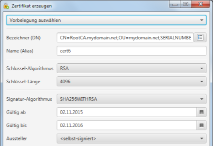
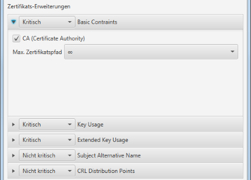
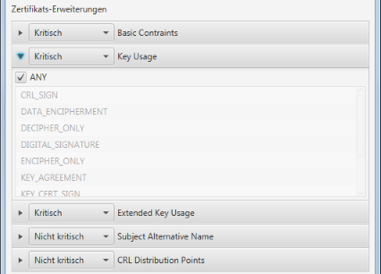
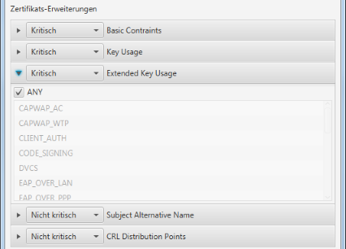
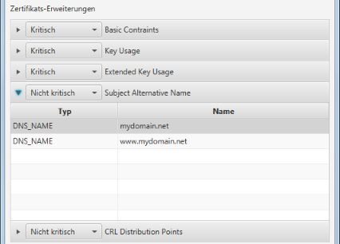
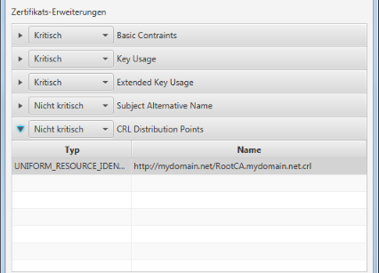

Zertifikat erzeugen/Zertifikatsantrag (CSR) erzeugen
Über diesen Dialog werden verschiedene Zertifikat-Operationen gesteuert. Das Erzeugen und Erneuern von Zertifikaten,
sowie das Erzeugen und Erneuern von Zertifikatanträgen. Abhängig vom jeweiligen Kontext sind nur ein Teil der
im Folgenden beschriebenen Einstellungen verfügbar.
Allgemeine Einstellungen
Im oberen Bereich des Dialogs werden die allgemeinen Einstellungen festgelegt.

Mittels der Auswahl einer der angebotenen Vorbelegungen kann der Dialog für einen bestimmten Bedarf auf Basis
einer Einstellungs-Vorlage oder einem existierenden Zertifikat vorbelegt werden.
Der Bezeichner (DN) legt den Namen des zu erzeugenden Zertifikats fest. Dieser Name ist als "Distinguished Name" (DN)
einzugeben. Zur Eingabeunterstützung kann dabei der DN bearbeiten Dialog
genutzt werden. Ein gängiger Bezeichner-Aufbau ist CN=<Zertifikat-Name/Verwendung>,OU=<Domäne>,SERIALNUMBER=<Zeitstempel zur Unterscheidungen von mehreren Versionen>.
Der Name (Alias) legt den Dateinamen fest, unter welchem die Zertifikat-Elemente gespeichert werden. Dieser Name
musst daher ein gültiger Dateiname und eindeutig innerhalb des Zertifikatsspeichers sein.
Mit Schlüssel-Algorithmus und -Größe werden die Parameter für die Schlüssel-Generierung festgelegt.
Beide Optionen sind beim Erneuern nicht verfügbar, da in diesem Fall der existierende Schlüssel wiederverwendet wird.
Die Aussteller-Einstellungen definieren durch wen und wie das neue Zertifikat signiert wird. Für einen
Zertifikatsantrag sind diese Einstellungen nicht verfügbar, da dieser durch eine externe Zertifierungsstelle (CA)
signiert wird.
Zertifikat-Erweiterungen
Der Dialog ermöglicht die Angabe von verschiedenen Zertifikat-Erweiterungen. Die gängigen Erweiterungen sind:
"Basic Constraints", "Key Usage" und "Extended Key Usage".
Basic Constraints

Die "Basic Constraints"-Erweiterung gibt an, ob es sich bei dem Zertifikat um eine Zertifizierungsstelle (CA) handelt
oder nicht. Im Falle einer Zertifierungsstelle gibt die maximale Pfadlänge die maximale Länge für einen
Zertifierungspfad an. Bei einer maximalen Pfadlänge von 0, kann das Zertifikat selbst noch weitere Zertifikate
ausstellen. Die ausgestellten Zertifikate aber nicht mehr.
Key Usage

Die "Key Usage"-Erweiterung gibt die Standard-Verwendungszwecke des zu erstellenden Zertifikats an.
Extended Key Usage

Die "Extended Key Usage"-Erweiterung gibt die erweiterten Verwendungszwecke des zu erstellenden Zertifikats an.
Subject Alternative Name

Die "Subject Alternative Name"-Erweiterung (SNA) wird verwendet, um Alternativ-Namen für das Zertifikat festzulegen.
Für einen Web-Server z.B. sollten hier alle DNS-Namen aufgelistet werden, unter welchen der Server erreichbar ist.
Sobald wenigstens ein SNA-Eintrag existiert, wird der Zertifikats-Bezeichner nicht mehr betrachtet. D.h. der CN-Name
aus dem Bezeichner muss bei Bedarf ebenfalls als SNA eingetragen werden.
CRL Distribution Points

Die "CRL Distribution Points"-Erweiterung gibt an, wie die Zertifikatsperrlisten (CRL) des zu erstellenden Zertifikats
publiziert werden. Die Anwendung ermöglicht die Pflege einer einfachen Liste von Zertifikatsperrlisten-Namen und
geht dabei davon aus, dass der Zertifikat-Aussteller auch der Aussteller der Sperrliste ist.